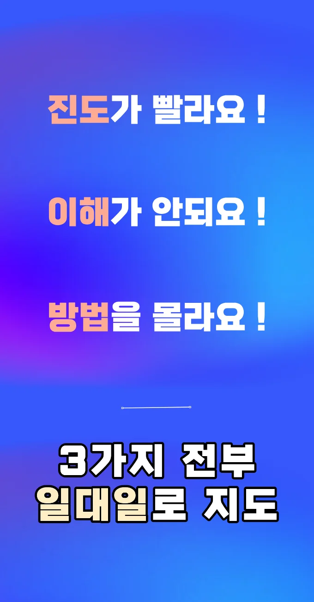
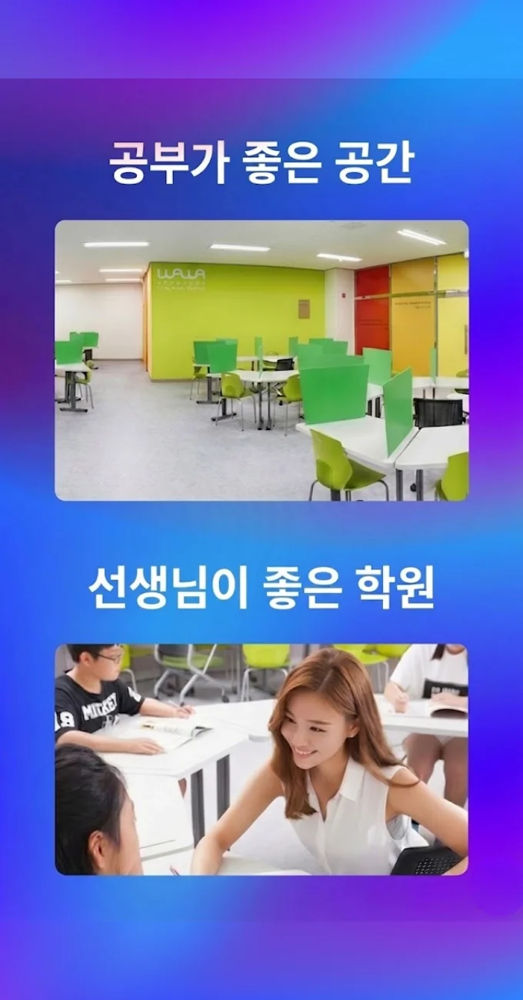
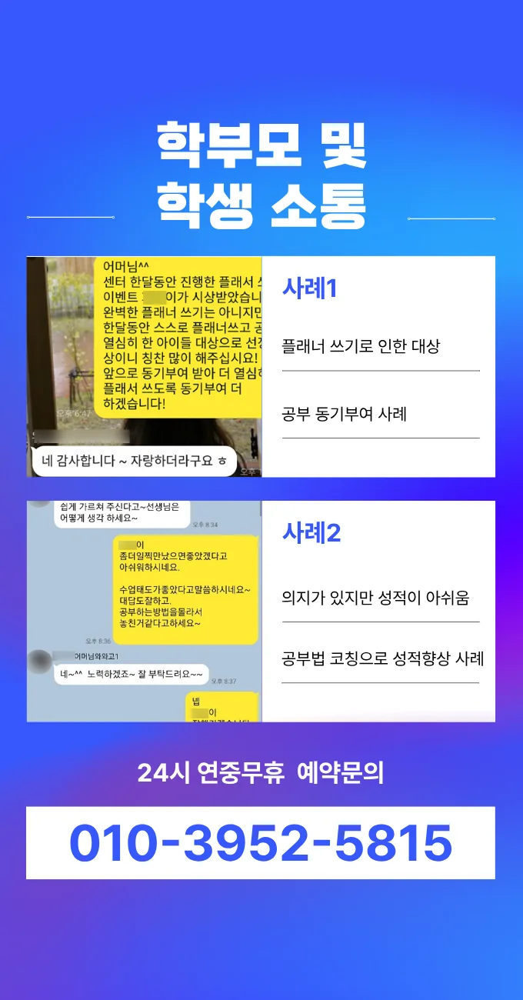
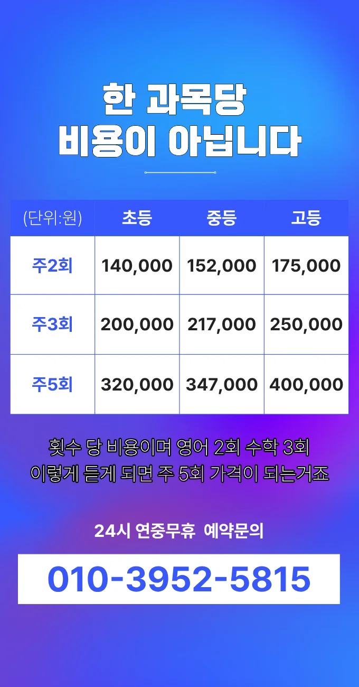

아이에게 딱 맞는 수원영통동 내신대비학원을 찾는 건 참 애가 타는 일이죠. 단순히 수업을 듣는 것뿐만 아니라 아이가 스스로 생각하는 힘을 키울 수 있는 곳인지 꼼꼼히 살펴봐야 해요. 예를 들어 수학 시간에 좌표 평면 위에 있는 삼각형 넓이 구하기 문제를 풀 때도 그냥 공식만 외우게 하는 건 반만 맞는 거라 생각해요. 왜 그렇게 넓이가 구해지는지 원리를 이해하고 다른 문제에도 응용할 수 있도록 도와주는 선생님이 계신 곳이 진짜 실력이 느는 곳이거든요. 수원영통동 내신대비학원 선택할 때는 이런 교육 철학이 가장 중요하다고 생각해요.
각 학년마다 학습 목표와 필요한 지도 방식이 달라요. 초등 저학년은 기초 개념을 놀이와 그림으로 풀어내는 것이 효과적이라고 보여요. 초등 고학년은 문제 해결 능력을 키우기 위해 단계별 피드백을 제공해요. 중학생은 심화 개념과 오답 분석을 통해 학습 효율을 높여요. 고등학생은 수능 대비 전략과 실전 모의고사를 중점으로 다루어요. 전체 학년을 아우르는 맞춤형 수업은 수원영통동 지역 학생들의 학업 성취도를 꾸준히 끌어올려요.
우리 지역의 학부모들은 학습 이력 기반 맞춤 안내가 특징인 이 수원영통동 내신대비학원을 눈여겨 봐요. 교사는 개별 목표 설정과 단계별 성과 분석을 통해 학생 개개인의 성장 궤적을 설계합니다. 학생은 플룻 140,000원, 피아노 1 80,000원이라는 투명한 수강료 구조를 확인하고 선택의 폭을 넓히게 돼요. 부모님은 정기적인 학습 이력 보고서를 받아 학습 진행 상황을 쉽게 파악할 수 있어요. 지역사회는 수원영통동 내신대비학원 내에서 진행되는 메타학습 전략이 실제 성적 향상에 연결된다고 평가해요. 수원영통동은 수원영통동 내신대비학원 접근성이 뛰어나 걸어서 이동이 가능해 시간 절약 효과가 크다고 들었어요.
| 학원명 | 와와학습코칭센터 |
| 수강료 | 플룻 140,000원 | 피아노1 80,000원 |
CURRICULUM
학생은 오답 개념을 스스로 설명하며 이해도를 높이고, 과도한 자료는 체계적인 정리법을 통해 관리합니다. 교사는 단계별 목표를 설정하고, 피드백을 통해 학습 방향을 조정합니다. 실전 문제 풀이와 토론 활동을 병행해 사고력을 키우며, 주간 리뷰를 통해 진도 점검을 실시합니다. 이 과정에서 자기주도 학습 습관이 자연스럽게 형성됩니다.
수원영통동 인근의 학생들은 수학 기하 단원에서 특히 더 어려움을 겪는 경우가 많아요. 그래서 해당 단원은 반복 훈련을 통해 문제에 익숙해지게 하고, 전 단계의 문제를 다시 맞히면서 자신감을 회복하게 도와줘요. 또한 목표를 설정한 후에 그걸 실제로 얼마나 실천했는지 점검하는 과정을 반복하게 해서, 계획을 실행하는 능력을 키워주죠. 이렇게 기초를 탄탄히 하니 나중에 더 어려운 문제를 만나도 당황하지 않고 잘 풀어낸답니다.
와와수원영통동 내신대비학원은 학생의 고민을 단순히 들어주는 것에 그치지 않고 해결 중심의 상담 체계를 운영하는 점이 달라요. 유형별 분류 기준이 명확하고 반 운영 방식도 체계적이라 학부모가 믿고 맡길 수 있죠. 성취의 경험이 계속 누적되는 성장 루틴을 확보하는 것이 최우선 목표예요. 서술형 문제 풀이 시 자료 분석력을 향상시키는 활동도 꼼꼼하게 진행하고, 교과 과정 교재와 심화 문제집 두 권을 병행해서 사용하여 깊이 있는 학습을 유도해요. 이렇게 기본과 심화를 동시에 잡아야 실력이 탄탄해지거든요.
초등학교 5학년으로 밝지만 복습 습관이 부족한 아들을 둔 가정에 특히 적합해요. 공부 흐름이 자주 끊기는 학생도 체계적인 피드백을 통해 집중력을 유지할 수 있어요. 스스로 목표를 설정하고 꾸준히 실천하려는 자세가 있는 아이들에게 큰 도움이 될 거예요. 부모님과의 소통이 원활한 경우 더욱 효과가 높아져요.
첫째, 수업을 들은 아이는 선생님의 세심한 관찰 덕분에 자신의 약점을 빠르게 파악하고 개선할 수 있었다고 말했어요. 둘째, 진로 탐색 시간을 함께하면서 미래에 대한 시야가 넓어졌다는 긍정적인 반응을 보였습니다. 셋째, 새로운 학습 환경에 적응한 이후 꾸준히 공부 습관이 자리 잡혔다는 이야기가 전해졌어요. 넷째, 학습 루틴 체크리스트를 활용하면서 매일 목표를 달성하는 성취감이 크게 상승했다고 전해요. 다섯째, 조용하고 깔끔한 교실 덕분에 집중력이 향상돼 시험 성적이 눈에 띄게 올라갔다는 피드백을 받았습니다.

| 학원명 | 와와학습코칭학원 |
| 등록번호 | 제3918호 |